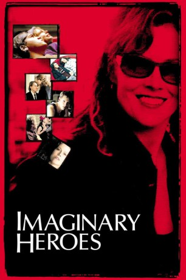

#11108 Imaginary Heroes
 
 IMDB-Wertung: 7.2 / 10
IMDB-Wertung: 7.2 / 10  Metascore: 53
Metascore: 53 
Die Familie Travis erlebt eine erschütternde Tragödie, die sie an ihre Grenzen führt. Für Sohn Tim ist das Leben ein einziger Alptraum. Sein Vater Ben zieht sich immer mehr zurück und behandelt Frau und Kinder wie Fremde. Seine Mutter Sandy verbirgt ihre Gefühle hinter beißendem Sarkasmus und betäubt sich mit Joints, während sie versucht, ein Geheimnis zu bewahren, das die ganze Familie bedroht. Mit einer Mischung aus Pathos, Humor und Selbsterkenntnis lernen die Familienmitglieder, einander zu akzeptieren - trotz ihrer Schwächen...
Jahr: 2004
Dauer: 100 Minuten
FSK: 12
Land: USA Studio: Sony Pictures ClassicsTonspuren:
Untertitel:
Auflösung: 1080p (1920x856) Größe: 4085 MB
Genre: Drama, Komödie
Regisseur: Dan Harris
Drehbuch: Dan Harris
Soundtrack: Deborah Lurie
Darsteller:
 Sigourney Weaver als Sandy Travis
Sigourney Weaver als Sandy Travis Emile Hirsch als Tim Travis
Emile Hirsch als Tim Travis Jeff Daniels als Ben Travis
Jeff Daniels als Ben Travis Michelle Williams als Penny Travis
Michelle Williams als Penny Travis- Kip Pardue als Matt Travis
 Deirdre O'Connell als Marge Dwyer
Deirdre O'Connell als Marge Dwyer- Ryan Donowho als Kyle Dwyer
- Suzanne Santo als Steph Connors
- Jay Paulson als Vern
- Luke Robertson als Jack Johnson
 Lee Wilkof als Mitchell Goldstein
Lee Wilkof als Mitchell Goldstein- Ned Benson als Undercover Hippie
 Larry Fessenden als Store Clerk
Larry Fessenden als Store Clerk Ari Graynor als Jenny
Ari Graynor als Jenny- Erin Fritch als Emily Slaff
- Wayne Kasserman als Robert
- Matthew Carey als Brett Tabisel
- Henry Strozier als Dr. Davis
 John Rue als Hal
John Rue als Hal Sylvia Kauders als Hattie
Sylvia Kauders als Hattie Adam LeFevre als Bob Clyde
Adam LeFevre als Bob Clyde- Mx Justin Vivian Bond als Kiki
- Nicole Tubiola als Tabitha
 Raymond Anthony Thomas als Police Officer
Raymond Anthony Thomas als Police Officer- John Bliss als Murph
- Jack Donner als Kenny
 Alberto Vazquez als Manuel - Driver
Alberto Vazquez als Manuel - Driver- Robert Emmet Lunney als Principal
 Tonye Patano als Big Mean Teacher
Tonye Patano als Big Mean Teacher- Francis Benhamou als Monica (uncredited)
 Marcia DeBonis als Nurse Lindy (uncredited)
Marcia DeBonis als Nurse Lindy (uncredited)- Danny Hayden als Lester the Molester (uncredited)
- Rodrigo Lopresti als Kissing Partygoer (uncredited)
- Gray Madder als Bobby (uncredited)
 Olga Merediz als Maria (uncredited)
Olga Merediz als Maria (uncredited)- Terry Beaver als Dr. Montey
- Sara Tanaka als Shelly Chan
- Ryan Patrick Bachand als Sid
- Lori Yeghiayan als Veteran Home Receptionist
- Heidi Newhart als Angela
- Stephen Rowe als Emergency Room Dr.
- Jen Jones als Sophie
- Lee Brock als Inappropriate Soccer Mom #1
- Barbara Gulan als Inappropriate Soccer Mom #2
- Bruce Norris als Mr. Barnes
- Kenny Mellman als Herb
- Fran McGee als Martha
- Chuck Patterson als Dean Demarco
- Linda S. Nelson als Mrs. Johnson
- Valerie Wright als Nurse
Datei: X:\2004(G-M)\Imaginary Heroes (2004, FSK12, 1920x856).mkv seit 24.04.2019
Festplatte: HD 2003-2004-2005(A-F)
 Es gibt insgesamt 41 Filme in der Gruppe '2004(G-M)'
Es gibt insgesamt 41 Filme in der Gruppe '2004(G-M)'